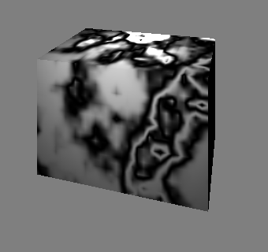
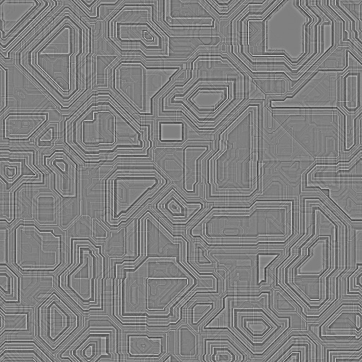
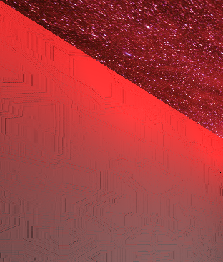
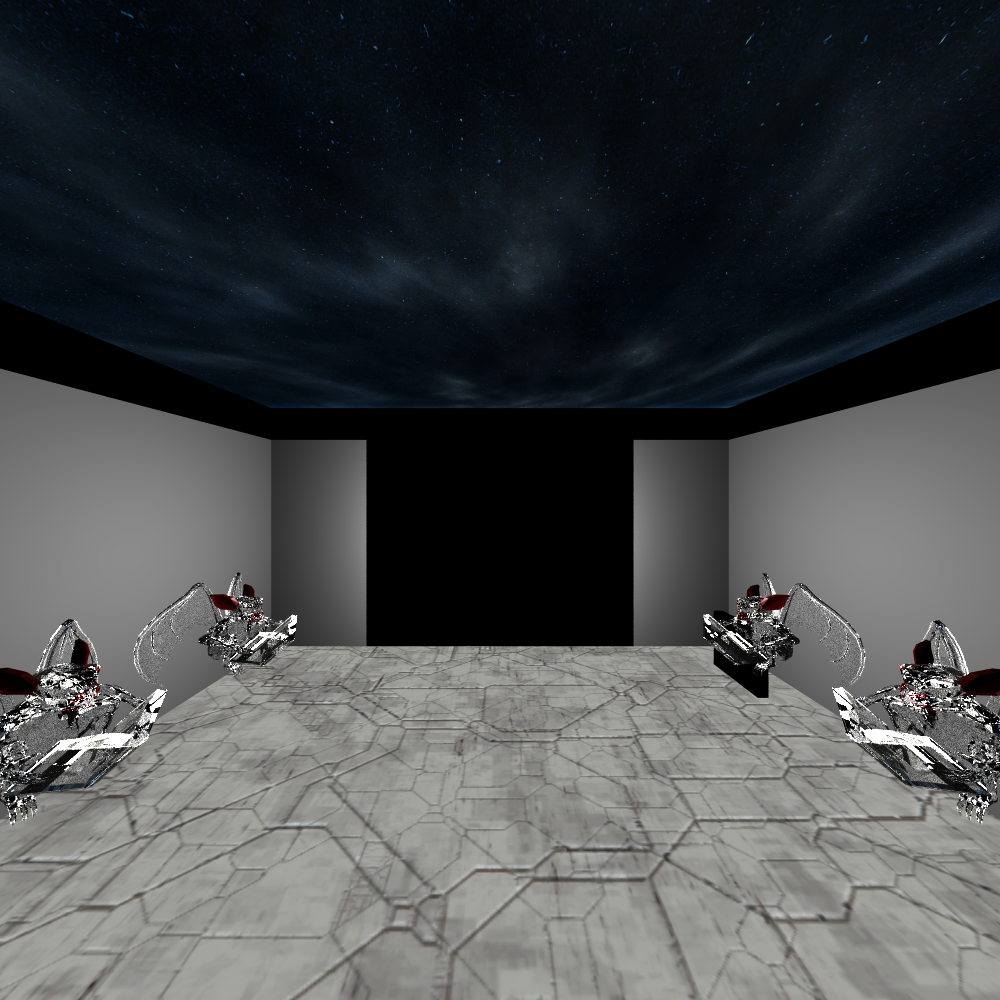
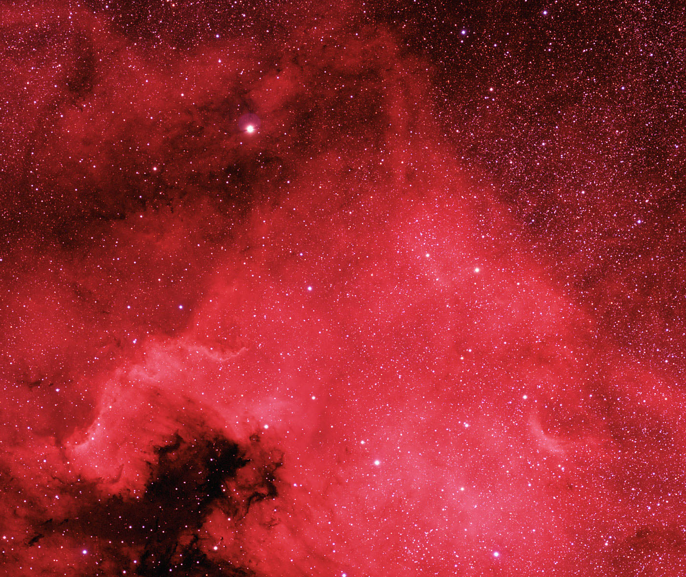
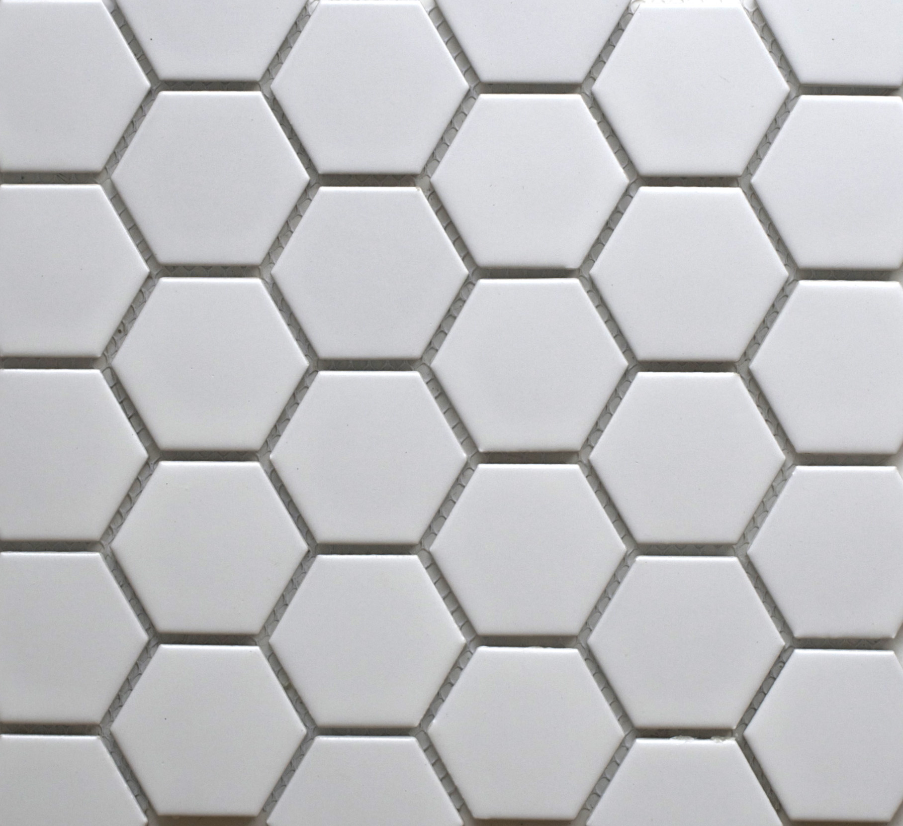
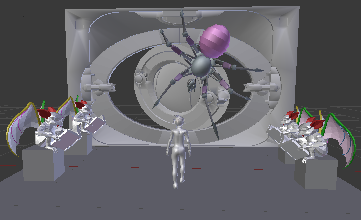

The cubes under the Gargoyles are textured with marble material. Under MarbleMaterial() in marble.cpp perlin noise is used to create the marble texture.

The body of the Gargoyles is of glass material but the teeth and horns are of Lambertian red.
The left and the right walls of the scene contains bump map of the image below to give it a mystic look. They are illuminated by the point lights.
 
The Gargoyle and the cube on the back-right (near the door) is the original model, and the rest are translated and rotated appropriately.

We implemented the combine material of Mirror and Lambertian on the door.
Triangular image texture mapping is implemented on the ceiling and floor of the room.
 
The scene was modeled in Blender. The object files of door, gargoyle, spider and girl are available for free on the internet. Some character rigging had to be performed for the pose of the girl. The entire scene was rendered in 15 hours with 400 samples on Core i7 Processor wth multi-threading.
